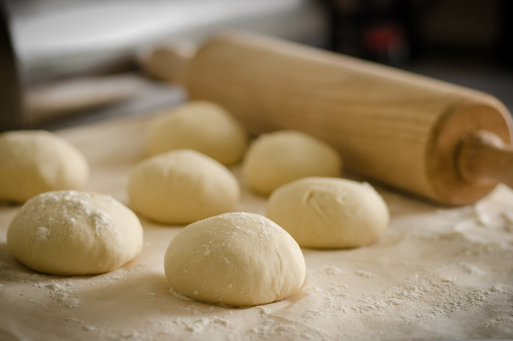

Pizza Dough
- 
-
An easy dough recipe for all your pizza needs.
Course: n/a
Prep time: 30 minutes
Total time: 60 minutes
Ingredients
- 7 g Dried Yeast
- 5 g Golden Caster Sugar
- 20 ml Extra Virgin Olive Oil
- 180 ml Lukewarm Water
- 300 g Tipo '00' Flour or Strong White Bread Flour
- 3 g Fine Sea Salt
Method
- In a jug, mix the yeast, sugar and oil into the water (1 part boiling, 2 parts cold will be perfect temperature for the yeast) and leave for 10 minutes for the yeast to rehydrate.
- Sive the flour and salt onto a clean work surface and make a well in the middle. Pour the yeast mix into the well.
- Using a fork, bring the flour in gradually from the sides and mix in. Repeat until it all starts to come together. Work the rest of the flour with your clean and flour-dusted hands.
- Knead for 10 minutes until springy and smooth.
- Place in a large flour-dusted bowl and flour the top of it. Cover the bowl with a damp cloth and place in a warm room for about an hour until double in size.
- Place the dough onto a flour-dusted surface and knock back (push down with fingertips to press out the air).
- Use immediately, or keep it wrapped in clingfilm in the fridge or freezer until required. Enjoy!